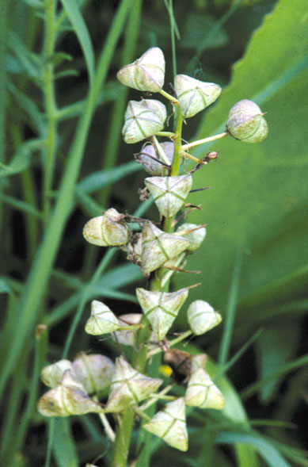
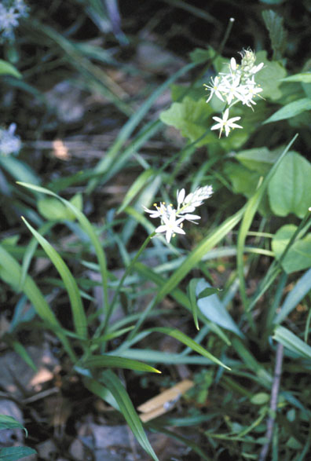
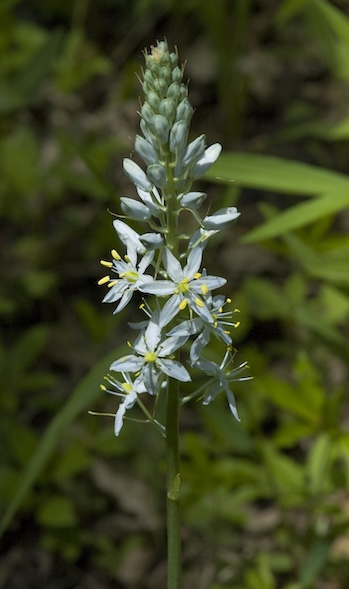
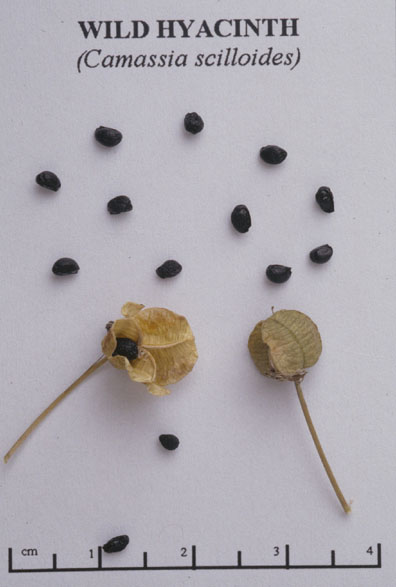

Camassia scilloides
Family: Liliaceae
Wild Hyacinth
Swink/Wilhelm #7



FLOWERING: May to mid-June
SEED TIMING: June
HABITAT: Prairies and savannas including woodland borders
DIAGNOSTIC FEATURES: 5 to 15 inches tall. Keeled, linear, grass-like leaves. Open spikes of 6 petaled light-blue star flowers.
TO PICK: Spikes turn parchment-like brown with rounded seed capsules. Strip entire spike.